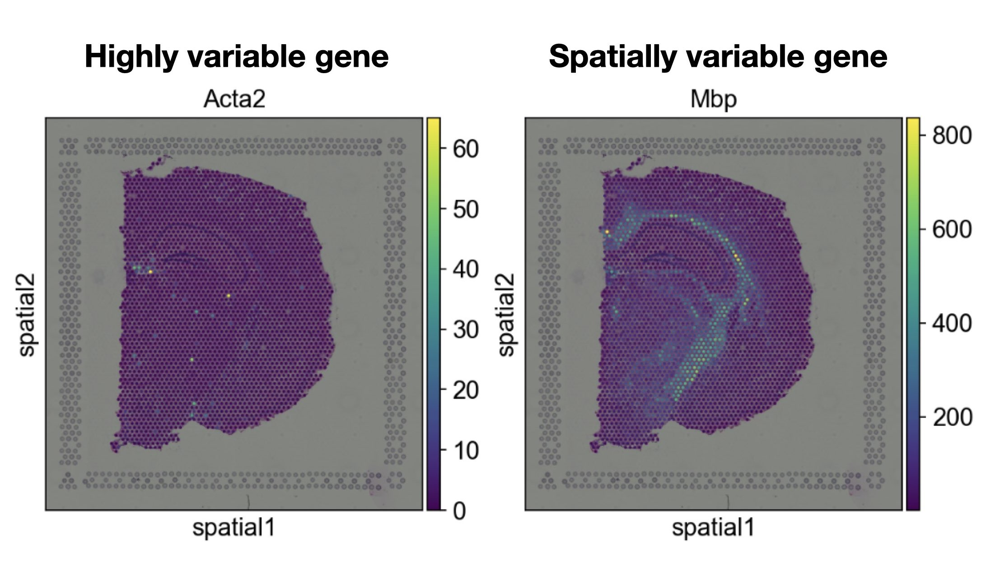

31. 空间变异基因#
关键要点
空间可变基因（spatially variable genes，SVG）是指那些表现出显著空间模式的基因。
为这项任务设计的方法在复杂性和模型假设方面各不相同。
我们建议使用多种方法来识别 SVG, 并通过绘制基因在空间中的表达来评估结果。
环境设置
安装 conda:
在创建环境之前，请确保 conda 已安装在您的系统中。
保存 yml 内容:
将 yml 选项卡中的内容复制到名为
environment.yml的文件中。
创建环境:
打开终端或命令提示符。
运行以下命令：
conda env create -f environment.yml
激活环境:
创建好环境后，使用以下命令激活它：
conda activate <environment_name>
替换
<environment_name>，名称就是在environment.yml文件中指定的那个。在 yml 文件里，它看起来像这样：name: <environment_name>
验证安装:
通过运行以下命令，检查环境是否创建成功：
conda env list
name: spatial
channels:
- defaults
- conda-forge
dependencies:
- conda-forge::python=3.12.12
- conda-forge::scanpy=1.12
- conda-forge::leidenalg
- conda-forge::pytorch-cpu
- conda-forge::pip
- pip:
- squidpy==1.8.1
- SpaGCN==1.2.7
- SpatialDE==1.1.3
- tangram-sc==1.0.4
- cell2location==0.1.5
31.1. 动机#
单细胞数据的一个主要分析步骤，是识别高变基因（highly variable genes，HVG）并进行特征选择，以降低数据集的维度。HVG 是指在不同细胞或不同细胞群之间表达谱差异显著的基因。然而，为这一任务设计的方法忽略了细胞的空间背景，因此无法识别空间上的变化。例如，某个基因可能是高变的，却并不呈现明显的空间模式，因此在空间上并不可变。
{kind=link}

图31.1 空间可变基因是指呈现出独特空间模式的基因，而高变基因则反映在不同细胞或细胞群之间差异显著的基因。#
空间上的变化可能源于细胞类型组成、整体功能依赖关系或细胞间通讯事件的差异，研究它有助于理解背后的组织生物学。用于识别空间可变基因（SVG）的方法，通常是通过把数据集中的空间变异与非空间变异分解开来，从而量化某个基因是否表现出显著的空间模式 [Walker et al., 2022].
针对这一任务，已经提出了多种方法，它们的复杂度和假设各不相同。目前对于哪种方法效果最好、以及如何普遍地定义空间变异性，尚无共识。SpatialDE [Svensson et al., 2018], SpatialDE2 [Kats et al., 2021] 和 SPARK[Zhu et al., 2021] [Sun et al., 2020] 使用空间相关性检验；Sepal[Andersson and Lundeberg, 2021] 利用空间表达上的高斯扩散（Gaussian diffusion）；scGCO[Zhang et al., 2022] 使用图剪切方法和 SpaGCN [Hu et al., 2021] 则基于通过图卷积神经网络识别出的空间域来识别 SVG。
在这个笔记本中，我们用Squidpy提供一个教学例子 [Palla et al., 2022] 及其对 Moran's I 的实现来寻找 SVG，随后再给出一个使用 SpatialDE 的示例工作流程。
31.2. 环境设置和数据#
我们首先载入本教程所需的相应软件包以及数据集。
import NaiveDE
import scanpy as sc
import SpatialDE
import squidpy as sq
sc.settings.verbosity = 3
sc.settings.set_figure_params(dpi=80, facecolor="white")
本教程使用的数据集由来自 1 只小鼠的 1 张组织切片组成，由以下提供： 10x Genomics Space Ranger 1.1.0。数据集在 Squidpy 中进行了预处理，为此数据集提供了加载功能。
adata = sq.datasets.visium_hne_adata()
31.3. Squidpy 中的 Moran's I 分数#
识别空间可变基因的一种方法是 Moran's I 得分，它衡量的是空间自相关（spatial autocorrelation），即在空间上彼此邻近的观测之间，基因表达等信号的相关性。
定义如下: \(I = \frac{n}{W}\frac{{\mathop {\sum }\nolimits_{i = 1}^n \mathop {\sum }\nolimits_{j = 1}^n w_{i,j}z_iz_j}}{{\mathop {\sum }\nolimits_{i = 1}^n z_i^2}}\) 其中
\(z_{i}\) 是该特征相对于均值的偏差 \(\left( {x_i - \bar X} \right)\)
\(w_{i,j}\) 是观测之间的空间权重
\(n\) 是空间单位的数目
\(W\) 表示全部总和 \(w_{i,j}\)
可以用Squidpy一行计算。为了这个例子，我们将只计算几个基因。
sq.gr.spatial_neighbors(adata)
sq.gr.spatial_autocorr(adata, mode="moran", genes=adata.var_names)
Creating graph using `grid` coordinates and `None` transform and `1` libraries.
Adding `adata.obsp['spatial_connectivities']`
`adata.obsp['spatial_distances']`
`adata.uns['spatial_neighbors']`
Finish (0:00:00)
Calculating moran's statistic for `None` permutations using `1` core(s)
Adding `adata.uns['moranI']`
Finish (0:00:00)
该方法向 adata.uns 中、在键 moranI下添加了一个数据框。现在我们来查看结果：
adata.uns["moranI"].head()
| I | pval_norm | var_norm | pval_norm_fdr_bh | |
|---|---|---|---|---|
| Nrgn | 0.874753 | 0.0 | 0.000131 | 0.0 |
| Mbp | 0.868723 | 0.0 | 0.000131 | 0.0 |
| Camk2n1 | 0.866542 | 0.0 | 0.000131 | 0.0 |
| Slc17a7 | 0.861761 | 0.0 | 0.000131 | 0.0 |
| Ttr | 0.841986 | 0.0 | 0.000131 | 0.0 |
Squidpy 对每个基因计算的 Moran's I 给出了
I也就是 Moran's I，pval_norm正态假设下的 p 值，var_norm在正态假设下 Moran's I 的方差。{p_val}_{corr_method}校正后的 p 值。
让我们来看看其中两个已被识别出的显著基因，例如 Nrgn 和 Ttr 校正后的 p 值均为 0.0。
sq.pl.spatial_scatter(adata, color=["Nrgn", "Ttr"])
{kind=link}
可以看到，这两个基因的表达在组织中似乎都呈现出明显的局部化分布。需要注意的是，它们也可能（也可能不）同时是某些特定细胞聚类的标记基因。对“识别空间可变基因”的一种理解是：它是一种正交的特征选择方式——挑选在空间上表现出变异的基因，而不是像通常那样挑选在各观测之间表现出变异的基因。
31.4. SpatialDE#
SpatialDE 通过高斯过程回归（Gaussian process regression）来识别空间可变基因。该空间方法把每个基因的表达变异分解为空间成分和非空间成分，然后计算空间方差项与非空间方差项之比，以量化数据集中整体的空间方差。为识别显著的空间可变基因，SpatialDE 会把能够使用空间成分的完整模型，与不含该项的模型进行比较。
我们使用与计算 Moran's I 时相同的数据集。由于 SpatialDE 要求把计数表保存为变量名唯一的 DataFrame，我们首先借助 Scanpy 中相应的函数，把所有变量名变为唯一。
adata.var_names_make_unique()
接下来，我们收集原始计数表，并把所有条形码名和变量名分别作为 DataFrame 的索引和列来保存。Scanpy 为此提供了一个高效的函数， get.obs_df ，它用于收集相应的键——这些键存储在 adata.
counts = sc.get.obs_df(adata, keys=list(adata.var_names), use_raw=True)
SpatialDE 还需要以 DataFrame 形式提供总计数和空间坐标。我们可以像之前一样，用同一个 Scanpy 函数来收集这些数据。
total_counts = sc.get.obs_df(adata, keys=["total_counts"])
SpatialDE 假设噪声服从正态分布。由于我们刚刚提取的是原始计数，而它在经验上服从负二项分布，因此需要先把计数数据转换为服从正态分布的噪声。为此，SpatialDE 使用了一种基于 Anscombe 变换的技术：
norm_expr = NaiveDE.stabilize(counts.T).T
/home/icb/anna.schaar/miniconda3/envs/spatial-chapters/lib/python3.9/site-packages/scipy/optimize/_minpack_py.py:906: OptimizeWarning: Covariance of the parameters could not be estimated
warnings.warn('Covariance of the parameters could not be estimated',
转换后的数据可能仍然包含各空间样本之间不同的文库大小，这会给基因表达带来偏差。SpatialDE 建议在真正进行空间检验之前先考虑这一点，并用其提供的函数把它回归剔除：
resid_expr = NaiveDE.regress_out(total_counts, norm_expr.T, "np.log(total_counts)").T
现在，我们可以把空间坐标和归一化计数传入 SpatialDE，来运行真正的空间检验。在我们这里使用的数据集上，若对所有基因运行，SpatialDE 大约需要 15 分钟。
results = SpatialDE.run(adata.obsm["spatial"], resid_expr)
我们现在可以检查结果:
results.head()
| FSV | M | g | l | max_delta | max_ll | max_mu_hat | max_s2_t_hat | model | n | s2_FSV | s2_logdelta | time | BIC | max_ll_null | LLR | pval | qval | |
|---|---|---|---|---|---|---|---|---|---|---|---|---|---|---|---|---|---|---|
| 0 | 1.065401e-01 | 4 | Mrpl15 | 68.5 | 8.383709e+00 | -2836.151268 | -8.553531 | 7.251817e+00 | SE | 2688 | 0.004038 | 3.928962e-01 | 0.009583 | 5703.888747 | -2836.979729 | 0.828461 | 0.362718 | 0.462134 |
| 1 | 1.132153e-06 | 4 | 4732440D04Rik | 68.5 | 8.830160e+05 | 1005.684545 | -0.849110 | 8.478789e-07 | SE | 2688 | 0.043424 | 2.453021e+10 | 0.001693 | -1979.782879 | 1005.684446 | 0.000099 | 0.992065 | 0.992308 |
| 2 | 2.556985e-01 | 4 | Rrs1 | 68.5 | 2.910013e+00 | -2372.430346 | -5.025306 | 5.476694e+00 | SE | 2688 | 0.001739 | 5.062643e-02 | 0.003723 | 4776.446902 | -2376.942619 | 4.512274 | 0.033652 | 0.056698 |
| 3 | 2.492298e-01 | 4 | Cops5 | 68.5 | 3.011488e+00 | -2579.842074 | -11.139282 | 2.601672e+01 | SE | 2688 | 0.001748 | 5.234926e-02 | 0.003669 | 5191.270360 | -2584.203162 | 4.361088 | 0.036769 | 0.061422 |
| 4 | 2.060557e-09 | 4 | Cpa6 | 68.5 | 4.851652e+08 | 2817.673512 | -0.768099 | 1.230862e-09 | SE | 2688 | 0.031727 | 5.410451e+15 | 0.001641 | -5603.760814 | 2817.673419 | 0.000093 | 0.992305 | 0.992308 |
得到的 DataFrame 包含以下几个重要的列：
g,基因名称l，一个参数，表示某个基因在多大的距离尺度上改变其表达pval，空间差异表达的 p 值qval，经多重检验校正后的 p 值
我们现在可以根据校正后的 p 值对结果进行排序（qval），并且为了更便于阅读 DataFrame，将表格取子集，仅显示 g, l 和 qval。我们还会把该对象保存为 top10 以方便地用它进行下游的绘图。
top10 = results.sort_values("qval").head(10)[["g", "l", "qval"]]
top10
| g | l | qval | |
|---|---|---|---|
| 7612 | Esrra | 443.950519 | 0.0 |
| 6586 | Fbxo31 | 443.950519 | 0.0 |
| 6587 | Jph3 | 443.950519 | 0.0 |
| 6588 | Rpl13 | 443.950519 | 0.0 |
| 6589 | Cpne7 | 443.950519 | 0.0 |
| 6590 | Spata2l | 443.950519 | 0.0 |
| 6591 | Tcf25 | 443.950519 | 0.0 |
| 6592 | Tubb3 | 443.950519 | 0.0 |
| 6593 | Rhou | 443.950519 | 0.0 |
| 6594 | 2810455O05Rik | 443.950519 | 0.0 |
现在，我们可以绘制最显著的前三个基因，并查看它们的空间模式。我们还额外绘制了数据集的聚类，以分析检测到的基因是否可能与特定聚类相关联。
sq.pl.spatial_scatter(adata, color=list(top10["g"][:3]) + ["cluster"])
{kind=link}
正如我们所观察到的，所有三个基因都呈现出空间模式。 Esrra 似乎与某个特定聚类无关，但主要在皮层、丘脑和下丘脑区域呈现出空间模式。 Fbxo31 和 Jph3 则主要在锥体层（pyramidal layer）中表达。
31.5. 参考文献#
Alma Andersson and Joakim Lundeberg. Sepal: identifying transcript profiles with spatial patterns by diffusion-based modeling. Bioinformatics, 37(17):2644–2650, September 2021. URL: https://doi.org/10.1093/bioinformatics/btab164 (visited on 2023-07-03), doi:10.1093/bioinformatics/btab164.
Jian Hu, Xiangjie Li, Kyle Coleman, Amelia Schroeder, Nan Ma, David J Irwin, Edward B Lee, Russell T Shinohara, and Mingyao Li. SpaGCN: integrating gene expression, spatial location and histology to identify spatial domains and spatially variable genes by graph convolutional network. Nat. Methods, 18(11):1342–1351, November 2021.
Ilia Kats, Roser Vento-Tormo, and Oliver Stegle. SpatialDE2: Fast and localized variance component analysis of spatial transcriptomics. bioRxiv, pages 2021.10.27.466045, January 2021. URL: http://biorxiv.org/content/early/2021/11/11/2021.10.27.466045.abstract, doi:10.1101/2021.10.27.466045.
Giovanni Palla, Hannah Spitzer, Michal Klein, David Fischer, Anna Christina Schaar, Louis Benedikt Kuemmerle, Sergei Rybakov, Ignacio L. Ibarra, Olle Holmberg, Isaac Virshup, Mohammad Lotfollahi, Sabrina Richter, and Fabian J. Theis. Squidpy: a scalable framework for spatial omics analysis. Nature Methods, 19(2):171–178, Feb 2022. URL: https://doi.org/10.1038/s41592-021-01358-2, doi:10.1038/s41592-021-01358-2.
Shiquan Sun, Jiaqiang Zhu, and Xiang Zhou. Statistical analysis of spatial expression patterns for spatially resolved transcriptomic studies. Nature Methods, 17(2):193–200, February 2020. URL: https://doi.org/10.1038/s41592-019-0701-7, doi:10.1038/s41592-019-0701-7.
Valentine Svensson, Sarah A Teichmann, and Oliver Stegle. SpatialDE: identification of spatially variable genes. Nature Methods, 15(5):343–346, May 2018. URL: https://doi.org/10.1038/nmeth.4636, doi:10.1038/nmeth.4636.
Benjamin L. Walker, Zixuan Cang, Honglei Ren, Eric Bourgain-Chang, and Qing Nie. Deciphering tissue structure and function using spatial transcriptomics. Communications Biology, 5(1):220, March 2022. URL: https://doi.org/10.1038/s42003-022-03175-5, doi:10.1038/s42003-022-03175-5.
Ke Zhang, Wanwan Feng, and Peng Wang. Identification of spatially variable genes with graph cuts. Nature Communications, 13(1):5488, September 2022. URL: https://doi.org/10.1038/s41467-022-33182-3, doi:10.1038/s41467-022-33182-3.
Jiaqiang Zhu, Shiquan Sun, and Xiang Zhou. SPARK-X: non-parametric modeling enables scalable and robust detection of spatial expression patterns for large spatial transcriptomic studies. Genome Biology, 22(1):184, June 2021. URL: https://doi.org/10.1186/s13059-021-02404-0, doi:10.1186/s13059-021-02404-0.
31.6. 贡献者#
31.6.2. 审阅者#
Lukas Heumos